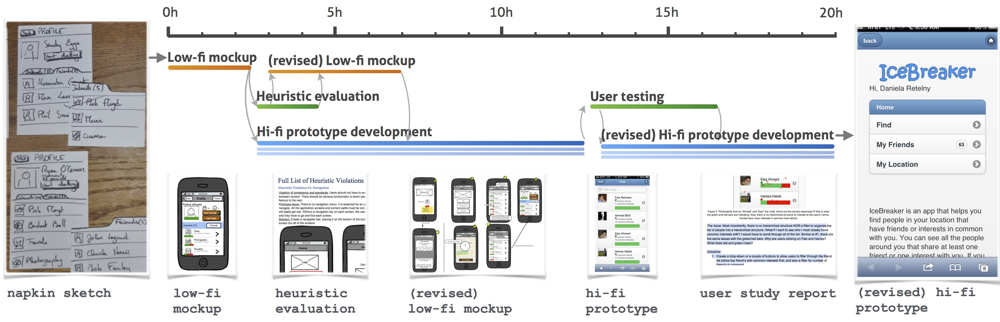
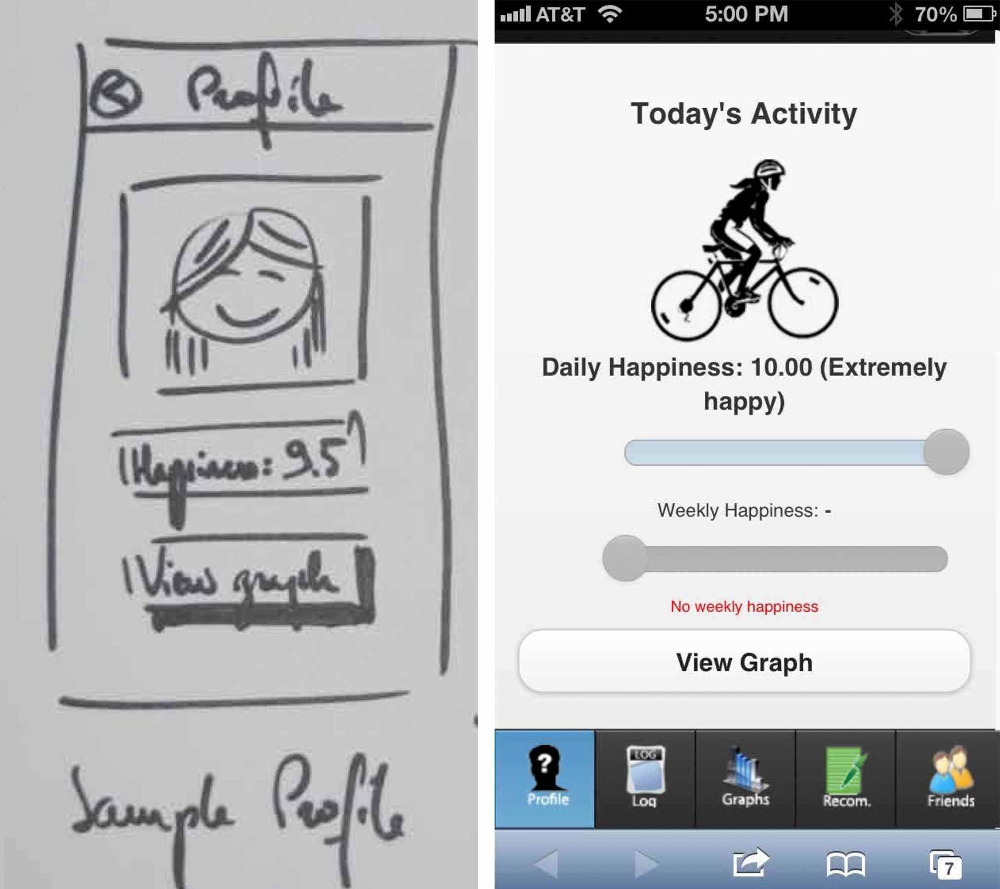
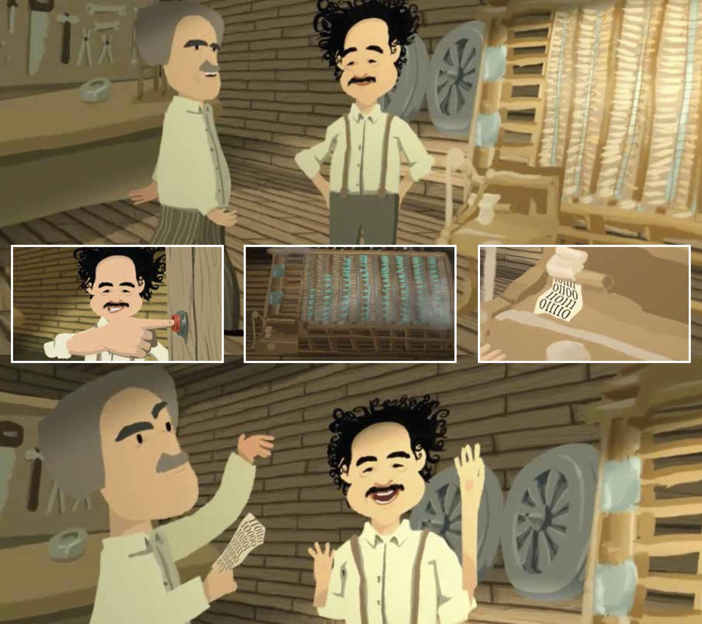
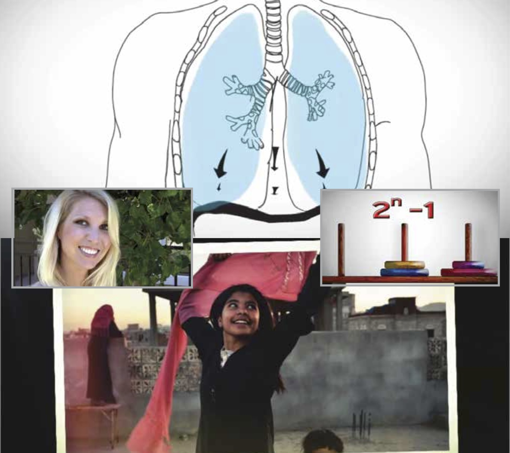

About Flash Teams
What is a flash team?
Flash teams are computationally-guided teams of crowd experts, supported by lightweight, reproducible, and scalable team structures. Crowdsourcing platforms give users access to thousands of workers, on-demand, but the most prevalent model, microtask crowd work, fails to take advantage of the combined expertise of these workers. Flash teams structure expert crowd work to enable users to complete complex and interdependent projects (e.g., web design) by embedding techniques of high performing offline teams within a model that can take advantage of computation’s ability to abstract, scale, and visualize progress.
Flash teams use elastic recruiting techniques that allow teams to grow and shrink on-demand and pipelining to accelerate completion times by beginning the next stage of a workflow as soon as the previous stage has sufficient preliminary results.

What have flash teams done?
Flash teams have created a number of these projects including: web application prototypes, animated videos, and have even recombined to create a MOOC (massive open online course) platform complete with content. These projects have used a number of different online experts including: professional photographers, user interface (UI) designers, web developers, animators, and even opera singers. Example projects are shown below and on the examples page.

Mobile Web Application

Short Animation

MOOC Courses
How do flash teams get created?
Flash teams are instantiated through Foundry, a web platform that gathers workers and manages them as they follow a structured workflow defining each task and how workers interact. Foundry serves as a visual authoring environment that guides project requesters through creating their own flash team of expert crowd workers using decomposed team roles and task-based events in the authoring environment. Users can either author a team from scratch, or borrow from a list of existing teams and edit or run them.

How do workers use Foundry?
After they have finished hiring workers, requesters can give workers access to their team on Foundry. From there, the requester can monitor the progress of the team. Specifically, once the project has begun, Foundry switches to runtime mode. Each worker receives a unique link that logs them in to the Foundry runtime with their tasks highlighted in the timeline.
Foundry tracks the progress of each task, and facilitates coordination and collaboration between team members as well as with the requester. Workers can log-in to view their tasks, upload deliverables, mark tasks as “complete,” track the progress of the whole team and chat with the others workers and the project requester.
Where can I find Foundry?
Foundry is not public yet, but as soon as it is we will post the sign up link here. Interested in being notified when you can sign up for Foundry? Want to be an early tester? Email us.